Bleach
Hollows y Arrancar en Bleach
En Bleach, los Hollows son almas corrompidas que han perdido su humanidad y atacan para llenar un vacio imposible. Los Arrancar son Hollows que han roto parte de esa monstruosidad y han obtenido rasgos y poderes cercanos a los Shinigami, convirtiendose en algunos de los enemigos mas temibles de toda la serie.
Volver a BleachGuia general
El vacio, la corrupcion y la evolucion monstruosa
Los Hollows nacen cuando un alma humana no es purificada y termina deformandose por la desesperacion, el apego o la corrupcion. Su mascara blanca y el agujero en el pecho representan precisamente eso: la perdida de identidad y el vacio que intentan llenar devorando otras almas. Bleach los usa no solo como monstruos, sino como una version retorcida del sufrimiento humano.
Cuando ese proceso avanza todavia mas, algunos Hollows consiguen una evolucion mucho mas rara y peligrosa: los Arrancar. Al arrancarse parte de la mascara adquieren forma mas humana, mayor inteligencia y tecnicas mucho mas refinadas. Con Aizen y el Hogyo ku, esa evolucion se acelera y se convierte en un ejercito real.
- Los Hollows viven principalmente en Hueco Mundo, el gran desierto espiritual de la serie.
- Su mascara blanca y su agujero representan perdida, hambre y ausencia de humanidad.
- Los Arrancar son el puente monstruoso entre Hollow y Shinigami.
Que son los Hollows
Concepto base
Almas humanas transformadas en monstruos
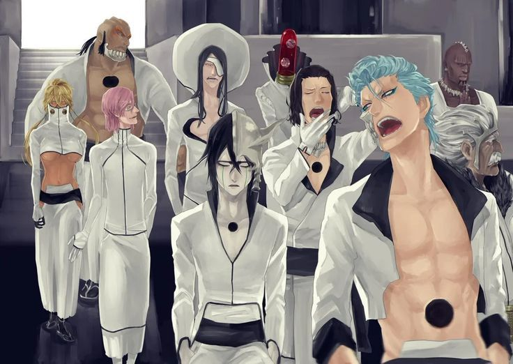
Un Hollow aparece cuando un alma queda atrapada, no es guiada correctamente y se corrompe hasta perder su forma humana. Atacan a vivos, espiritus y otras presas para sobrevivir, y muchas veces conservan un eco tragico de lo que fueron antes, algo que hace que Bleach les de un tono mucho mas oscuro que el de simples monstruos de batalla.
- De que van: son almas que no encontraron descanso y se deformaron espiritualmente.
- Caracteristicas: mascara blanca, agujero en el pecho y hambre constante de almas.
- Funcion en la serie: son la amenaza basica que justifica el trabajo de los Shinigamis.
Tipos de Hollows
Nivel 1
Hollows normales
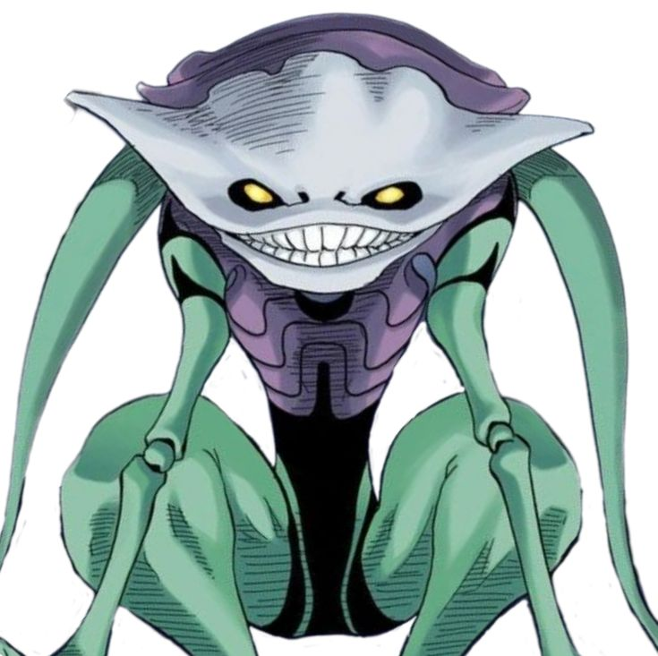
Son los mas comunes y los menos refinados. Cazan almas humanas, funcionan por instinto y sirven como puerta de entrada al mundo oscuro de Bleach.
Nivel 2
Gillian o Menos Grande
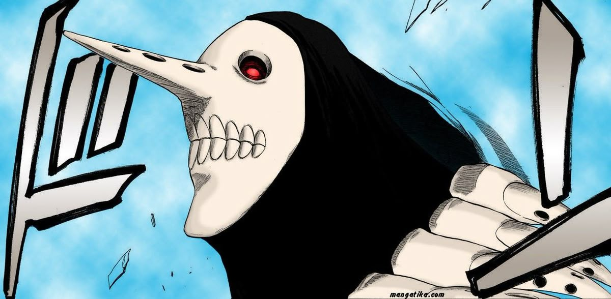
Los Gillian son enormes concentraciones de Hollows fusionados. Impresionan por tamano y presion espiritual, aunque suelen ser poco inteligentes y bastante uniformes.
Nivel 3
Adjuchas
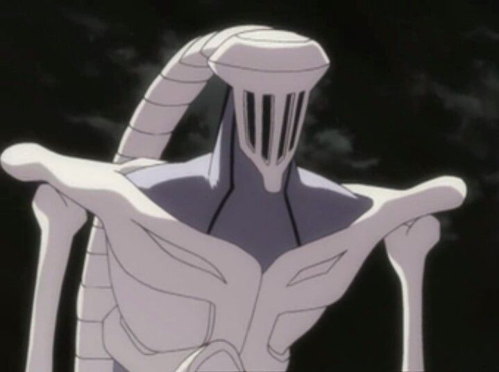
Los Adjuchas son mucho mas peligrosos, con forma mas concreta y mayor inteligencia. Ya no son solo masa: empiezan a mostrar personalidad, estrategia y una identidad de combate mas clara.
Nivel 4
Vasto Lorde
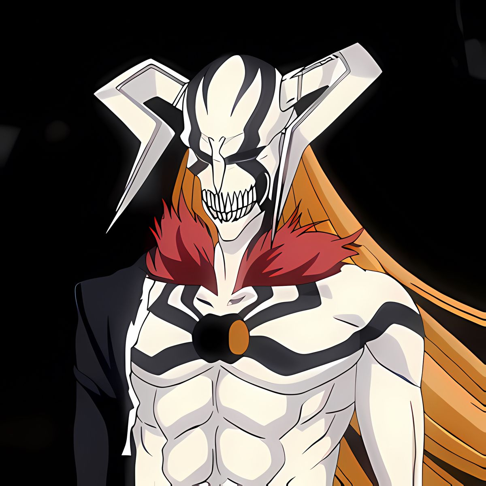
Los Vasto Lorde son los mas raros y poderosos. Su existencia preocupa incluso a la Soul Society porque su nivel puede acercarse o superar al de capitanes Shinigami, lo que cambia por completo la escala del conflicto.
De Hollow a Arrancar
El salto a Arrancar es lo que convierte a estos monstruos en una fuerza realmente militar. Siguen siendo seres del vacio, pero ganan inteligencia, lenguaje, jerarquia y habilidades cada vez mas sofisticadas. Eso les permite combatir no solo con brutalidad, sino tambien con estrategia, velocidad, cero, hierro y resurreccion.
- Arrancarse la mascara simboliza una evolucion hacia forma humanoide.
- La Resurreccion funciona como liberacion de su naturaleza Hollow original.
- Con Aizen, esta evolucion deja de ser excepcional y se vuelve un proyecto de guerra.
Sosuke Aizen: cerebro de Hueco Mundo
Gran villano
Sosuke Aizen
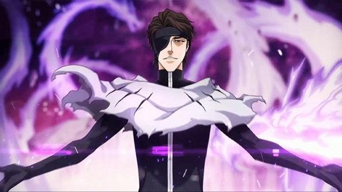
Aizen es el eje absoluto de los Arrancar. Durante mucho tiempo parece un capitan tranquilo de la 5 division, pero en realidad ha manipulado la historia desde dentro del Gotei 13. Su ambicion va mas alla de ganar una guerra: quiere romper los limites entre razas espirituales y colocarse por encima del orden entero.
- Kyoka Suigetsu: su zanpakuto permite hipnosis total y hace que nadie pueda fiarse de sus sentidos.
- Hogyoku: la gran clave para romper la frontera entre Hollow y Shinigami y acelerar evoluciones imposibles.
- Personalidad: frio, calmado y con una seguridad tan enorme que convierte a casi todos en piezas de su tablero.
- Evolucion: pasa de capitan oculto a gobernante de Hueco Mundo y a una forma casi divina.
Los Espada: elite de los Arrancar
Fuerza principal
El grupo mas temible de Aizen
Los Espada son los diez Arrancar mas fuertes al servicio de Aizen. Cada uno tiene una personalidad muy marcada, una Resurreccion propia y un nivel de poder que obliga a movilizar capitanes, tenientes e incluso a Ichigo al maximo. No son un grupo uniforme: algunos pelean por orgullo, otros por vacio, otros por costumbre o por simple obediencia.
- Aizen los usa como herramientas, no como iguales.
- Muchos ni siquiera conocen del todo el plan final del Hogyoku.
- Su fuerza es la prueba de que Hueco Mundo puede competir directamente con la Soul Society.
Espada principales
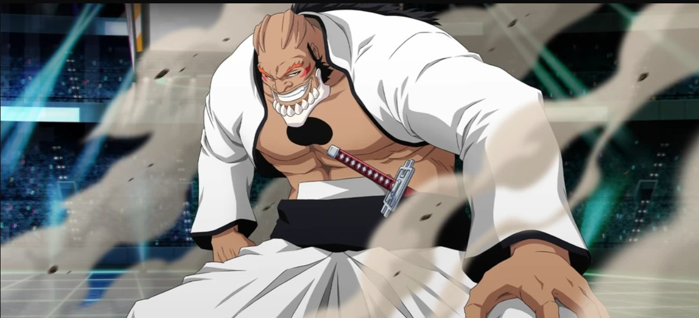
Espada #0 - Yammy Llargo
Furia y poder brutoDe que va: parece tosco y simple, pero su verdadero rango rompe la jerarquia aparente.
Poder: se vuelve mas fuerte cuanto mas enfadado esta y adopta una forma monstruosa gigantesca.
Rasgo: es la sorpresa del sistema de numeracion al revelarse como el Espada #0.
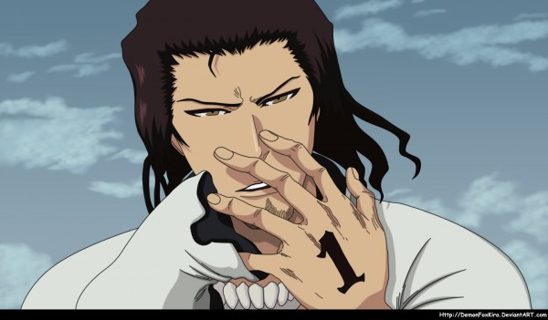
Espada #1 - Coyote Starrk
Soledad y vacio emocionalDe que va: el Espada mas tranquilo, apagado y melancolico.
Poder: puede dividirse junto a Lilynette y disparar ataques espirituales devastadores.
Rasgo: su fuerza esta ligada a una soledad tan brutal que ni siquiera soportaba estar con otros.
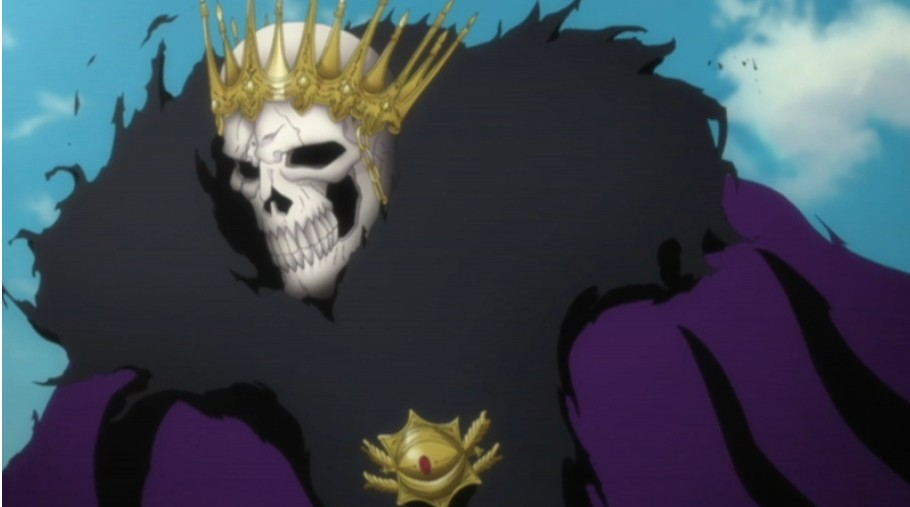
Espada #2 - Baraggan Louisenbairn
Tiempo, decadencia y muerteDe que va: antiguo rey de Hueco Mundo antes de quedar sometido por Aizen.
Poder: todo lo que toca envejece, se pudre y se descompone.
Rasgo: es uno de los poderes mas rotos de toda la saga por lo dificil que resulta siquiera acercarse a el.
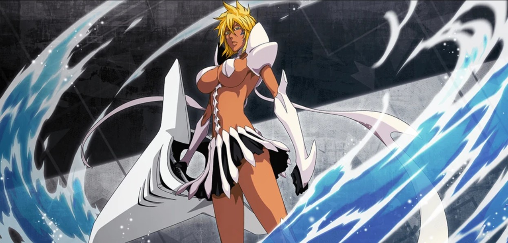
Espada #3 - Tier Harribel
Agua, control y liderazgoDe que va: una de las Arrancar mas racionales y contenidas del grupo.
Poder: tecnicas ligadas al agua y al combate limpio y eficiente.
Rasgo: destaca por liderar con estrategia en un grupo normalmente mucho mas caotico.
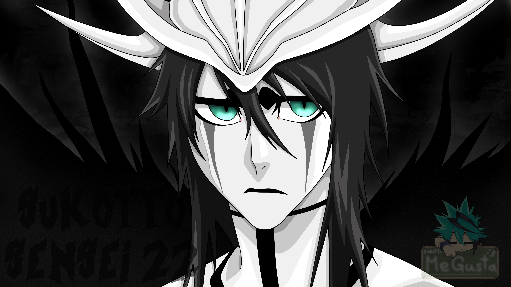
Espada #4 - Ulquiorra Cifer
Vacio y nihilismo absolutoDe que va: el Arrancar mas frio, inexpresivo y distante de la elite.
Poder: una Resurreccion brutal y la Segunda Etapa, una forma oculta que nadie esperaba.
Rasgo: su choque con Ichigo es de los enfrentamientos mas iconicos y oscuros de Bleach.
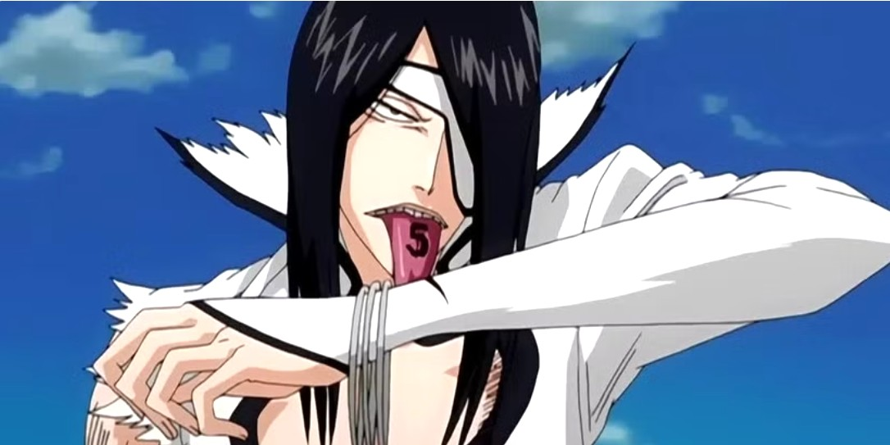
Espada #5 - Nnoitra Gilga
Violencia y obsesion por la fuerzaDe que va: vive obsesionado con demostrar que nadie puede aplastarlo.
Poder: resistencia bestial, cuerpo preparado para aguantar castigo y lucha salvaje.
Rasgo: su batalla con Kenpachi es una explosion directa de brutalidad pura.
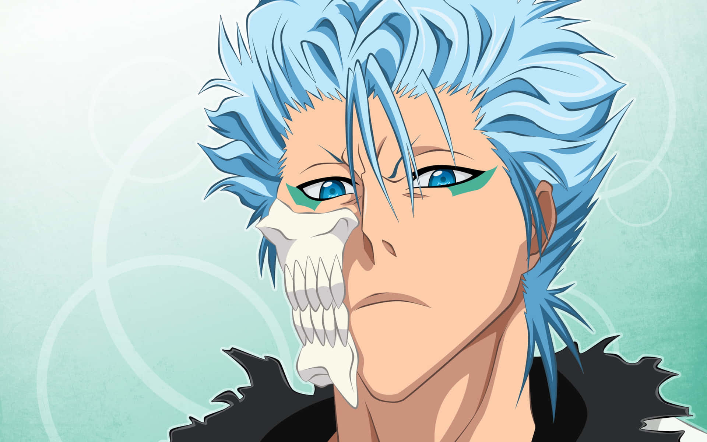
Espada #6 - Grimmjow Jaegerjaquez
Orgullo, destruccion y combateDe que va: agresivo, impulsivo y obsesionado con imponerse a Ichigo.
Poder: velocidad, potencia y una presencia feroz incluso entre los Espada.
Rasgo: es uno de los rivales mas carismaticos y recordados de toda la serie.
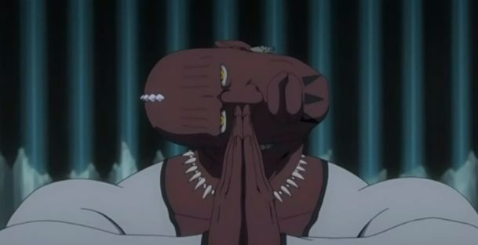
Espada #7 - Zommari Rureaux
Perfeccion y control del cuerpoDe que va: Arrancar centrado en la rapidez absoluta y la precision.
Poder: puede dominar partes del cuerpo enemigo y anular su control.
Rasgo: su idea de perfeccion lo vuelve muy inquietante incluso entre monstruos.
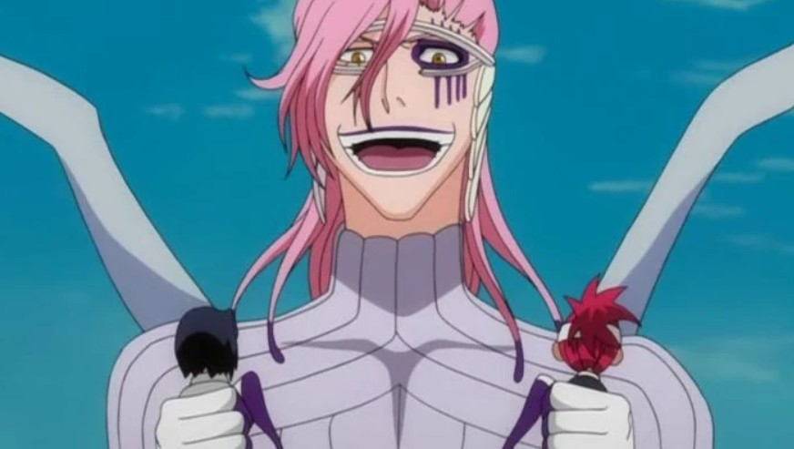
Espada #8 - Szayelaporro Granz
Ciencia y sadismoDe que va: cientifico perverso obsesionado con analizar y humillar a sus rivales.
Poder: clones, observacion biologica, control del cuerpo enemigo y trampas larguisimas.
Rasgo: es la version Hollow del cientifico que pelea como si estuviera en un laboratorio.
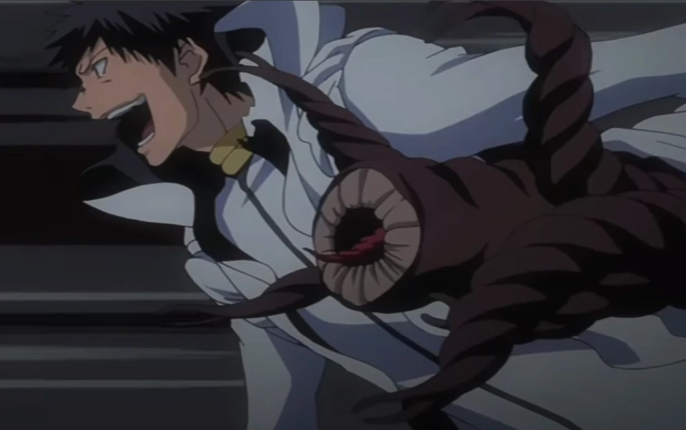
Espada #9 - Aaroniero Arruruerie
Absorcion y horror perturbadorDe que va: uno de los Arrancar mas desagradables y extranos de la saga.
Poder: absorber otros Hollows y acumular miles de identidades y rostros.
Rasgo: su combate con Rukia destaca por lo incomodo, retorcido y emocional.
Relacion Aizen y Espada
- Aizen nunca confia de verdad en ellos: los usa como piezas sacrificables.
- El Hogyoku acelera o permite la evolucion que hace posible a muchos Arrancar superiores.
- La mayoria obedece por fuerza, conveniencia o fascinacion, no por lealtad real.
- Su caida demuestra que incluso una elite monstruosa puede ser reemplazada en el plan de Aizen.
Resumen rapido
- Hollows = almas corrompidas que perdieron su humanidad.
- Hueco Mundo = desierto espiritual donde se concentran sus jerarquias y su reino.
- Arrancar = Hollows evolucionados con rasgos cercanos a los Shinigami.
- Aizen = mente maestra que convierte esa evolucion en una amenaza organizada.
- Espada = elite Arrancar y nucleo de la gran guerra contra la Soul Society.
Curiosidades
- Ulquiorra es el unico con Segunda Etapa confirmada, lo que lo vuelve todavia mas especial dentro de los Espada.
- Starrk es tan fuerte que se fragmenta para no estar solo, algo muy coherente con su tema de vacio emocional.
- Baraggan convierte el tiempo en arma, y por eso su poder parece casi imposible de contrarrestar de frente.
- Aizen manipula incluso a capitanes del Gotei 13 sin que lo sepan, gracias a una mezcla de inteligencia y Kyoka Suigetsu.
- Grimmjow sobrevive a la historia principal, y por eso sigue siendo uno de los Arrancar mas recordados y queridos.